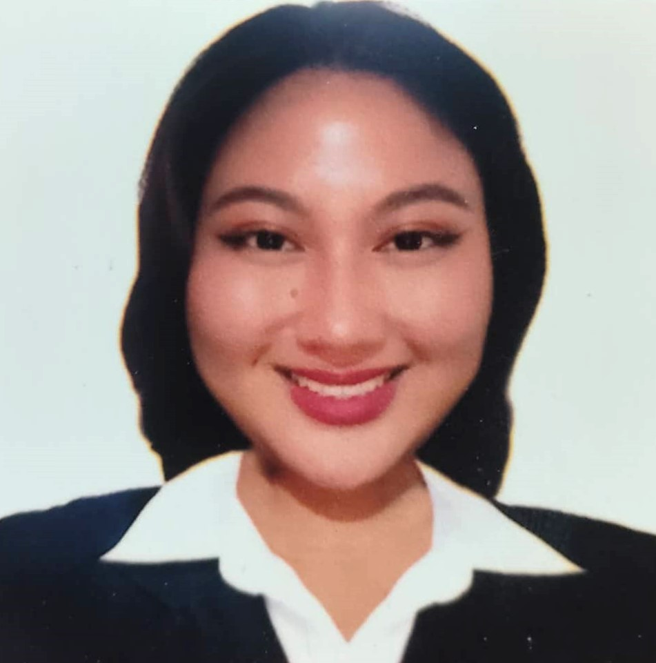

PERSONAL DETAILS
Name:
Bernadette Ice E. Emata
Address:
9988 tolentino st. Purok 4, Brgy. Puting Kahoy,
Silang, Cavite
Phone Number:
09516336944 / 09762939330
Email Address:
bernadetteemata03@gmail.com / sc.bernadetteice.emata@cvsu.edu.ph
SOCIAL MEDIA
TWITTER
@aucleingIce
FACEBOOK
@ice.biof
REFERENCES
SHARMAINE JACOB ESPLANE LPT.
St. Francis of Assis College-Taguig
0919546879
|
OBJECTIVES
TO GAIN AN ENTRY-LEVEL POSITION THAT VALUES INTEGRITY, COMPASSION AND TEAMWORK.
Personal Information
Age: 19 years old
Date of Birth: January 28, 2003
Place of Birth: Quezon City
Height: 5'2"
Weight: 88kg
Civil Status: Single
Gender: Female
Religon: Seventh Day Adventist
Nationality: Filipino
Mother's Name: Christine E. Emata
Occupation: Caregiver
Father's Name: Israel L. Emata
Occupation: BPO
Dialect Spoken: English, Filipino
SKILLS AND INTERESTS
- Has a great time-management skills who knows the valu of deadlines.
- Highly entusisatic.
- Excellent communication skills.
- Good interpersonal skills.
EDUCATIONAL BACKGROUND
TERTIARY : B.S INFORMATION TECHNOLOGY (2022-PRESENT)
- Cavite State University - Silang Campus (CvSU-S)
J Rizal, Silang, Cavite
SECONDARY : INFORMATION and COMMUNICATIONS TECHNOLOGY STRAND (2020-2021)
- Sto. Domingo Integrated High School Sta. Rosa, Laguna
Junior High School (2019-2020)
- Alternative Learning System Adventist University of the Philippines, Silang, Cavite
PRIMARY : Elementary (2018-2019)
- Alternative Learning System Brgy. Tartaria Buklod Bahayan Subdivision Court, Silang, Cavite
|